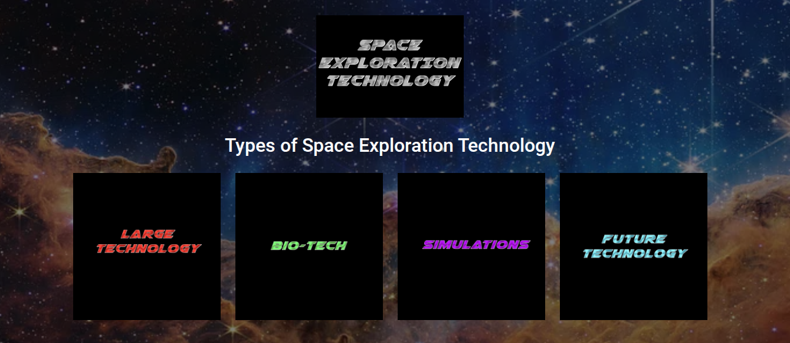

Every year in the Software Engineering Program, our teacher assigns us a Freedom Project. This project is when we get to choose what to work on throughout the whole year, but there is a prompt. For the 10th grade, the prompt is to make a website on present and future technology of a topic of your choosing. When we decided on a topic, we researched it so that in the future we could put it on our website. After learning about HTML, CSS, and Bootstrap, our teacher also assigned us a tool to study on our own time based on our skill level. After completing the website, the 10th grade presented our projects at the Expo, where we got judged to see who would perform in the showcase. So this project was very high stakes.
This website showcases different technologies that are commonly used in space exploration. There are also technologies that I made up myself that could possibly be used in the future. I divided my different technologies into 4 different categories: Large Technology, Biological Technology, Simulation Technology, and Future Technology. This allowed for the organization of many technologies I researched. Some Large Technology I researched is the Falcon 9 and the James Webb Telescope. One technology I found for biological technology is Tissue Chips, and 2 other technologies I found for Simulation technology were Space Engine and NASA’s EYES. Then there were technologies that I made, such as Robot Rovers, which is basically a rover that looks like a Mech, and you can control it through a VR headset, so it feels like you are on Mars, but you are not actually there. As well, I made 3D-Printed rockets, which are rockets made out of 3D-printed metal and used Solar energy to fly into space. This is not only much more cost effective but also keeps the environment safe from fossil fuels.
One Challenge that I had while doing this project was using my tool, which was ReactJS. Before doing this project, I wasn’t informed that ReactJS has collaboration issues with GitHub. So when I finally got to using it, my website wasn’t showing up on the normal GitHub pages. I had to manually install new ones, and I can’t automatically update them when I do Git Push. I had to change files that I never would have changed before, such as package.json, so my website knows what my webpage is.
Another Challenge I had was when I forgot that .JSX files can’t link with HTML files. So I had to rewrite multiple of my .html files into .JSX, which took a lot of my time, has already been wasted due to trying to make my website appear on GitHub. So the amount of time I had to work on the website felt limited.
There is an issue with my website that every image on my website glows when you hover over it, so some people might think it is a button, though not every image is one. So I would like to edit it so that only certain buttons of my choosing will glow while others won't. I could also update my website and add an even larger variety of space exploration technologies as they are being invented, and maybe even come up with more ideas.
Original Repo